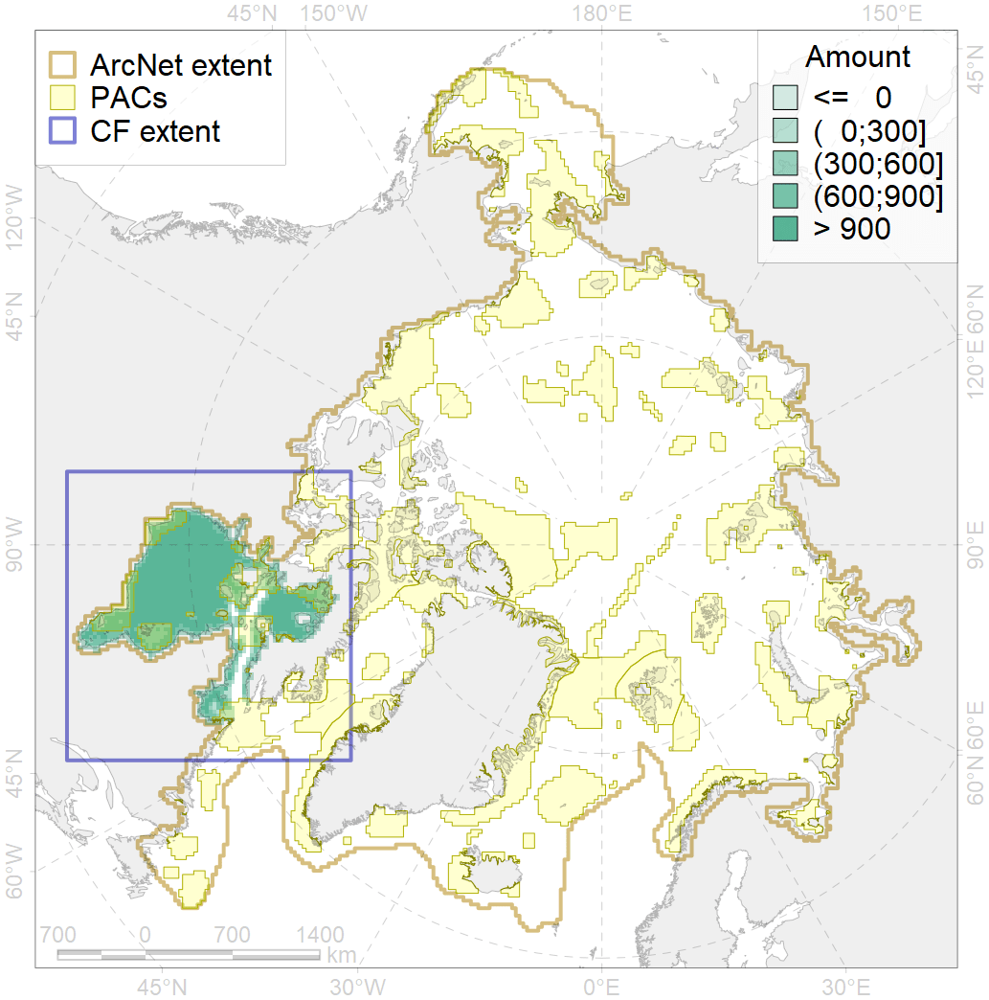
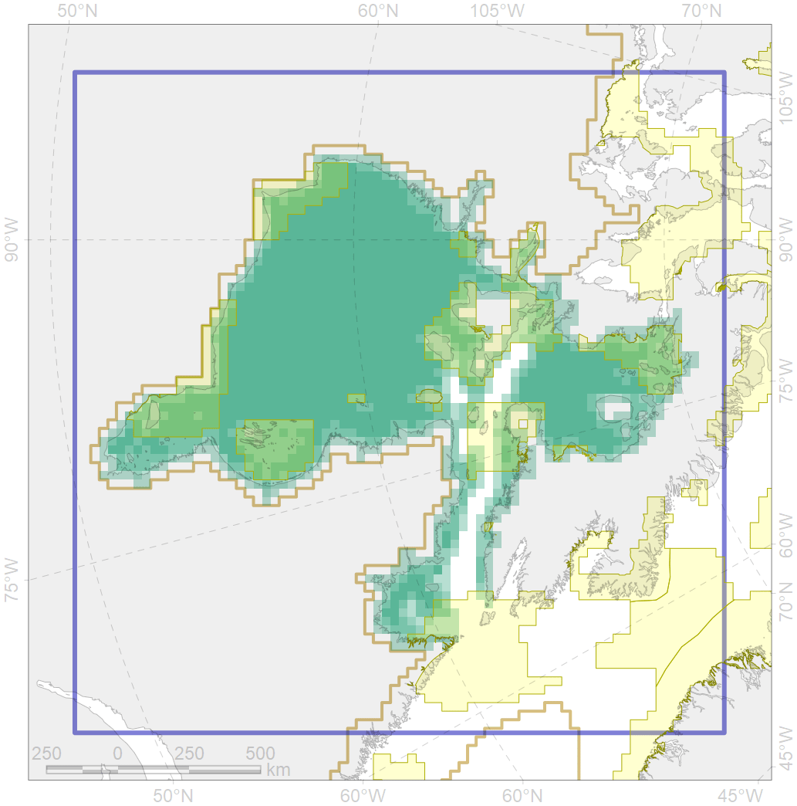

2010

| CF code | 2010 |
| CF name | Bearded seal whelping areas in the Hudson Bay |
| Time Period | 2007-2018 |
| Source(s) | Surrogate data; bathymetry from http://www.naturalearthdata.com/downloads/10m-physical-vectors/; DFO |
| Seasonality | March-June |
| Depth Horizon | 0-200 m |
| Methodology | Habitat preference research and expert input |
| Use Restrictions | Open source |
| Author Name | Irina Trukhanova |
| Notes | |
| Scenario’s Target | 0.24 |
| Target Achievement | 0.240 (Scenario: 100.1%) |
| PAC | Share of the Total Amount within the PAC | Share of the Target Achievement for the ArcNet | PAC’s Contribution to the Target Achievement |
|---|---|---|---|
| 66 | 3.1%3.1% | 11.1%11.4% | 11.1%11.4% |
| 67 | 4.6%4.7% | 16.7%17.0% | 16.7%17.0% |
| 68 | 0.5%0.5% | 1.3%1.3% | 1.3%1.3% |
| 69 | 2.8%2.8% | 10.4%10.4% | 10.4%10.4% |
| 70 | 4.9%5.0% | 18.3%18.5% | 18.3%18.5% |
| 71 | 4.1% | 15.9% | 15.9% |
| 72 | 0.3%0.6% | 0.9%1.2% | 0.9%1.2% |
| 73 | 1.6%1.7% | 6.1%6.2% | 6.1%6.2% |
| 74 | 0.1%0.2% | 0.3%0.6% | 0.3%0.6% |
| 75 | 0.0%0.0% | 0.1%0.1% | 0.1%0.1% |
| 76 | 0.6%0.8% | 1.6%2.0% | 1.6%2.0% |
| inner | 22.6%23.4% | 82.7%84.6% | 82.7%84.5% |
| outer | 76.9%80.6% | 17.4%28.2% | 17.3%28.2% |
| † supplement values are for area consistence whereas principal values are for Accenter compatible gridded stats |